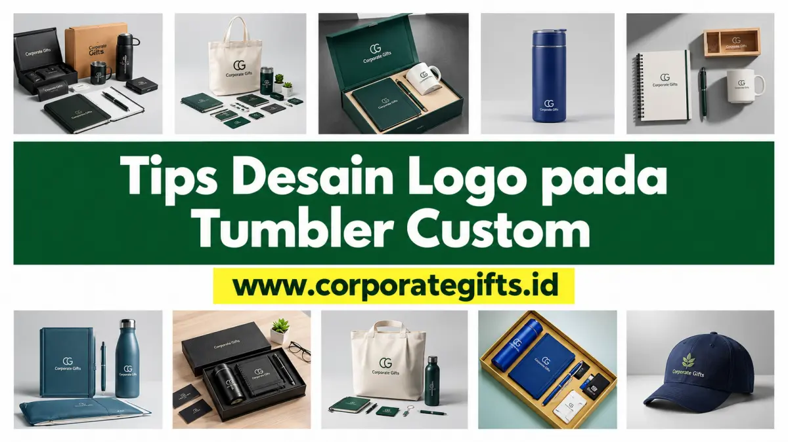

Corporate Gifts ID - Desain logo untuk tumbler yang profesional wajib memperhatikan orientasi visual, kontras warna latar, batas area cetak lengkung, dan penyediaan format file vektor beresolusi tinggi.
Tanpa persiapan teknis yang matang, sebuah tumbler premium berbahan stainless steel SUS 304 sekalipun bisa kehilangan nilai kemewahannya akibat garis cetak yang pecah, warna pudar, atau ukuran logo yang tidak proporsional saat diaplikasikan ke media silinder melengkung.
Poin Kunci Persiapan Desain Logo Tumbler:
- Format File Vektor Mutlak: Gunakan format .AI, .EPS, .CDR, atau PDF vektor untuk ketajaman garis tanpa pixelasi.
- Kontras Tinggi: Pastikan kontras tajam antara warna logo dan warna bodi tumbler (hindari warna nada serupa).
- Prinsip Kesederhanaan (Less is More): Hindari detail tulisan super kecil atau tagline panjang yang sulit dibaca dari kejauhan.
- Verifikasi Mockup Digital: Selalu evaluasi tata letak visual 3D sebelum memberi lampu hijau (approval) produksi massal.
Mengapa Persiapan Desain Logo Tumbler Itu Sangat Penting?
Menyiapkan file desain secara tepat sejak awal memberikan tiga keuntungan mendasar bagi proses pengadaan souvenir korporasi:
- Mempercepat Waktu Produksi: Menghilangkan proses revisi berulang antara pihak panitia instansi dan operator pra-cetak percetakan.
- Menjamin Akurasi Visual: Memastikan hasil fisik produk di tangan Anda identik dengan konsep visual yang telah disetujui manajemen.
- Mencerminkan Kredibilitas Perusahaan: Logo yang dicetak rapi dan tajam memperlihatkan bahwa brand Anda memiliki standar kualitas dan perhatian tinggi terhadap detail.
7 Tips Esensial Desain Logo pada Tumbler Custom
Berikut panduan 7 langkah teknis dari tim spesialis produksi kami untuk memastikan tampilan logo Anda optimal pada tumbler:

Pengaturan proporsi orientasi vertikal dan horizontal logo pada bidang cetak tumbler.
1. Pilih Orientasi yang Tepat: Vertikal atau Horizontal
Bodi tumbler memiliki struktur silinder vertikal. Pilihan orientasi menentukan seberapa besar logo dapat ditampilkan:
- Orientasi Horizontal (Melebar): Pilihan umum untuk wordmark atau tipografi nama brand yang memanjang.
- Orientasi Vertikal (Memanjang ke Atas): Sangat pas untuk logo bertumpuk atau teks vertikal agar ukuran logo tampak lebih besar dan mengisi proporsi tinggi tumbler secara elegan.
2. Sederhanakan Desain (Prinsip Less is More)
Logo dengan detail ilustrasi rumit atau gradasi warna rapat sering kali tampak kurang optimal saat diaplikasikan pada media silinder. Gunakan versi logomark yang bersih atau sederhanakan susunan elemen agar mudah dikenali dalam satu pandangan sekilas.
3. Perhatikan Tingkat Kontras Warna
Kontras warna adalah kunci utama keterbacaan logo dari jarak jauh:
- Kontras Tinggi (Sangat Dianjurkan): Logo putih/silver di atas bodi tumbler hitam, navy, atau hijau botol; logo hitam solid di atas tumbler putih atau silver.
- Kontras Rendah (Wajib Dihindari): Logo abu-abu muda di atas permukaan stainless mentah, atau logo biru tua di atas bodi tumbler hitam.
4. Pahami Batas Area Cetak Maksimal
Setiap model botol memiliki kontur dan lekukan berbeda. Area cetak rata (flat printable area) biasanya memiliki batas atas dan bawah agar hasil cetak tidak mengalami distorsi lengkung. Konsultasikan dimensi aman (misalnya maksimal lebar 18-20 cm dan tinggi 7-9 cm) kepada vendor.
5. Wajib Menyediakan File Format Vektor
Untuk proses grafir laser berpresisi tinggi dan digital UV printing tajam, kirimkan file berformat .AI (Adobe Illustrator), .EPS, .CDR (CorelDRAW), atau PDF Vektor. Format vektor tidak memiliki batas resolusi (bebas pecah). Jika hanya memiliki file raster (.PNG / .JPG), pastikan memiliki resolusi minimal 300 DPI dengan latar belakang transparan.
6. Gunakan Tipografi (Font) yang Bersih dan Terbaca
Jika desain memuat teks tambahan seperti nama divisi kerja, tahun anniversary, atau kutipan motivasi, pilih jenis huruf sans-serif yang tegas dengan ketebalan (stroke) yang cukup agar tidak terputus saat proses sablon atau grafir.
7. Selalu Evaluasi Mockup Digital Pra-Produksi
Mockup visual digital membantu Anda memvalidasi proporsi ukuran, letak ketinggian logo dari dasar botol, dan keserasian warna. Manfaatkan tahap ini untuk melakukan penyesuaian akhir sebelum batch produksi dimulai.
Tabel Komparasi Format File & Teknik Cetak Tumbler
Berikut rangkuman komparasi karakteristik teknik cetak dan persyaratan file desain untuk tumbler custom:
| Metode Branding | Format File Ideal | Ketahanan Hasil | Kelebihan Utama |
|---|---|---|---|
| Laser Grafir (Engraving) | Vector 1 Warna (.AI / .CDR / .PDF) | Permanen Seumur Hidup | Kesan mewah, tahan gores, cocok untuk bodi stainless steel |
| Digital Print UV Flatbed | Vector CMYK / PNG 300+ DPI | Sangat Tinggi (Anti Luntur) | Mendukung full color gradasi, tekstur timbul (embossed effect) |
| Sablon Presisi Rotari | Vector Separasi Warna (.AI / .EPS) | Tinggi untuk Pemakaian Normal | Sangat ekonomis untuk pesanan massal ratusan hingga ribuan pcs |
Strategi Penempatan Logo & Personalisasi Nama
Selain logo korporasi, tren souvenir eksekutif kini banyak menggabungkan personalisasi nama penerima (misalnya nama karyawan atau klien VIP). Penempatan nama individu dengan grafir laser halus di sisi belakang atau di bawah logo utama terbukti meningkatkan rasa memiliki (sense of ownership) dan mencegah tumbler tertukar di ruang kantor.
Kesimpulan: Wujudkan Tumbler Berkualitas Tinggi
Desain yang dipersiapkan dengan baik adalah kunci utama lahirnya souvenir souvenir kantor dan tumbler custom yang membanggakan citra perusahaan Anda.
Jika Anda masih ragu mengenai kesiapan file desain logo instansi Anda, tim desainer in-house CorporateGifts.ID siap membantu penyesuaian format vektor dan pembuatan preview mockup 3D gratis. Kunjungi halaman Minta Penawaran B2B untuk mendapatkan estimasi harga resmi dan konsultasi langsung.